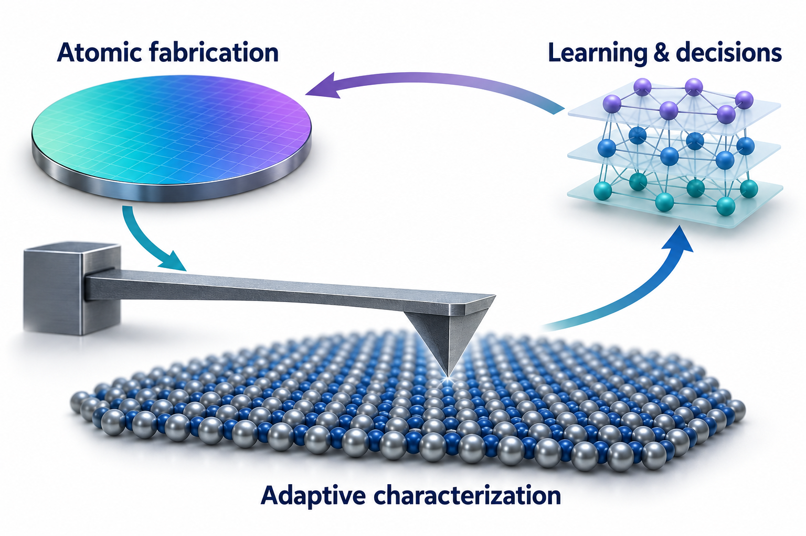
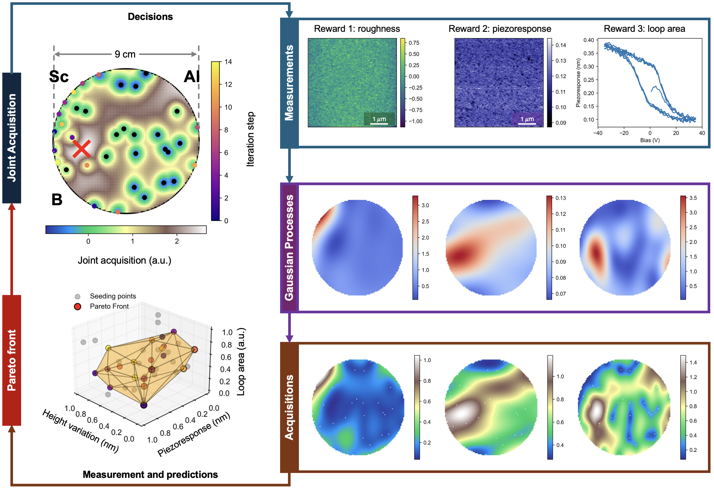
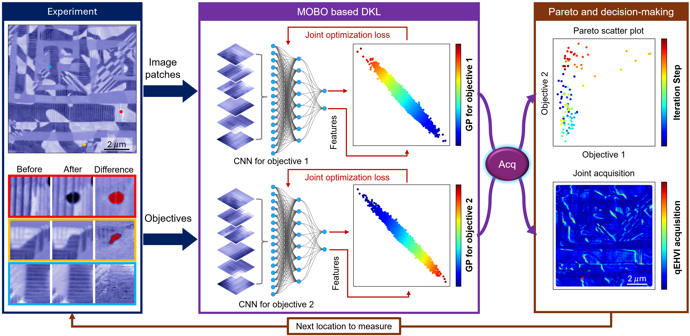

Automated atomic fabrication
Develop ways to create and modify atomic-scale structures, then test how those changes affect their properties.
Atomic-scale controlPhysics · Northeastern University
We aim to understand and control quantum materials through experiments that learn from their results.
Our research connects automated atomic fabrication, intelligent microscopy, and closed-loop materials discovery.

Help build the lab. We welcome inquiries from prospective students and postdoctoral researchers.
Research opportunitiesResearch directions
Develop experimental control at the atomic scale, learn from measurements, and use that knowledge to guide materials research.
Develop ways to create and modify atomic-scale structures, then test how those changes affect their properties.
Atomic-scale controlBuild scanning probe and other characterization workflows that tune instruments and adapt measurements to the sample.
Adaptive measurementsConnect fabrication, characterization, and machine learning so that experimental results determine the next step.
Learning through experimentsSelected research
Measurements of roughness, piezoresponse, and hysteresis-loop area guide where to measure next across an (Al, Sc, B)N library.

Image patches and measured objectives inform deep kernel learning models. The resulting predictions help select the next location for an experiment.
